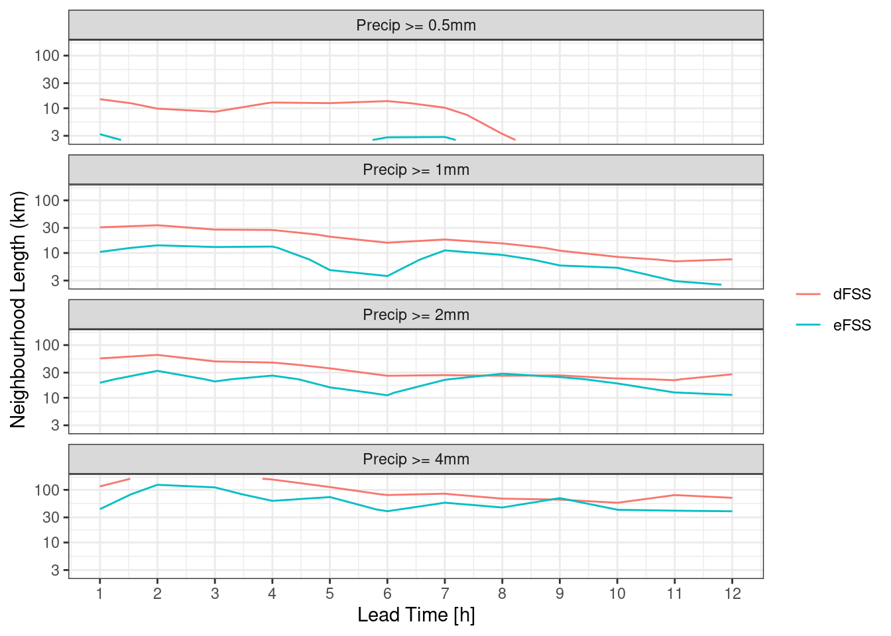

library(harp)
library(here)
library(scico)
library(dplyr)
library(forcats)
fcst_tmplt <- file.path(
"{fcst_model}",
"{YYYY}",
"{MM}",
"{DD}",
"{fcst_model}_lagged_6_h_subset_2_5km_{YYYY}{MM}{DD}T{HH}Z.nc"
)
fcst <- read_forecast(
2024021912,
"meps",
"pcp",
lead_time = seq(0, 12),
file_path = here("data", "netcdf"),
file_template = fcst_tmplt,
return_data = TRUE
)Spatial Verification
Ensemble Fractions Skill Score
The ensemble fractions skill score is computed by ens_fss(). The function is experimental, meaning that the results have not been verified, and there are no specialised plotting functions for the score. Unlike other functions in harpSpatial it is designed to have the same API as the point verification functions. This means that the workflow follows the
- Read Forecast
- Read Observations
- Join
- Verify
- Plot
pattern. For this example we will use some precipitation from the MEPS model. We have data for 7 of the ensemble members for lead times 0 - 12 for a domain over the north of Norway. We can read it in with read_forecast().
Read Forecast
We can plot the data with ggplot() together with geom_georaster(). There will be more about these in the next tutorial…
fc_map <- get_map(get_domain(fcst$meps_mbr000), polygon = FALSE)
ggplot() +
geom_georaster(aes(geofield = meps_mbr000), fcst) +
geom_path(aes(x, y), fc_map) +
scale_fill_gradientn(
colours = scico(256, palette = "davos", direction = -1),
trans = "log",
limits = c(0.125, NA),
breaks = seq_double(0.125, 12),
na.value = "transparent"
) +
facet_wrap(~valid_dttm) +
coord_equal(expand = FALSE) +
theme_harp_map()Warning in scale_fill_gradientn(colours = scico(256, palette = "davos", :
log-2.718282 transformation introduced infinite values.Since the data are from a forecast model, they are accumulated from time zero. For the verification we are going to want 1-hour accumulations. We can calculate these with decum().
fcst <- decum(fcst, 1) |>
filter(lead_time > 0)
ggplot() +
geom_georaster(aes(geofield = meps_mbr000), fcst) +
geom_path(aes(x, y), fc_map) +
scale_fill_gradientn(
colours = scico(256, palette = "davos", direction = -1),
trans = "log",
limits = c(0.125, NA),
breaks = seq_double(0.125, 12),
na.value = "transparent"
) +
facet_wrap(~valid_dttm) +
coord_equal(expand = FALSE) +
theme_harp_map()Warning in transformation$transform(x): NaNs producedWarning in scale_fill_gradientn(colours = scico(256, palette = "davos", :
log-2.718282 transformation introduced infinite values.Read Analysis
We are going to verify these against the MET Nordic analysis that has a 1 km resolution. For the purposes of this tutorial we have cut the domain to a similar area over northern Norway. We can read the data with read_analysis(), which works much in the same way as read_forecast(), except that the dttm argument is the valid date-time of the data.
anl_tmplt <- file.path(
"{fcst_model}",
"{fcst_model}_1_0km_nordic_{YYYY}{MM}{DD}T{HH}Z.nc"
)
anl <- read_analysis(
dttm = unique_valid_dttm(fcst),
analysis_model = "met_analysis",
parameter = "precipitation_amount",
file_path = here("data", "netcdf"),
file_template = anl_tmplt,
file_format_opts = netcdf_opts(proj4_var = "projection_lcc")
)
anl_map <- get_map(get_domain(anl$anl), polygon = FALSE)
ggplot() +
geom_georaster(aes(geofield = anl), anl) +
geom_path(aes(x, y), anl_map) +
scale_fill_gradientn(
colours = scico(256, palette = "davos", direction = -1),
trans = "log",
limits = c(0.125, NA),
breaks = seq_double(0.125, 12),
na.value = "transparent"
) +
facet_wrap(~valid_dttm) +
coord_equal(expand = FALSE) +
theme_harp_map()
However, we can’t verify the forecasts agains the the analyses since they are on different domains. We have two options here. Firstly we could use geo_regrid() to regrid the analyses to the forecast grid. Notice how the dimensions in the anl column change to match those of fcst.
# before
anl::gridded analysis:: # A tibble: 12 × 7
anl_model parameter valid_dttm level_type level units anl
* <chr> <chr> <dttm> <chr> <dbl> <chr> <geolist>
1 met_analysis precipit… 2024-02-19 13:00:00 unknown NA kg/m… [901 × 601]
2 met_analysis precipit… 2024-02-19 14:00:00 unknown NA kg/m… [901 × 601]
3 met_analysis precipit… 2024-02-19 15:00:00 unknown NA kg/m… [901 × 601]
4 met_analysis precipit… 2024-02-19 16:00:00 unknown NA kg/m… [901 × 601]
5 met_analysis precipit… 2024-02-19 17:00:00 unknown NA kg/m… [901 × 601]
6 met_analysis precipit… 2024-02-19 18:00:00 unknown NA kg/m… [901 × 601]
7 met_analysis precipit… 2024-02-19 19:00:00 unknown NA kg/m… [901 × 601]
8 met_analysis precipit… 2024-02-19 20:00:00 unknown NA kg/m… [901 × 601]
9 met_analysis precipit… 2024-02-19 21:00:00 unknown NA kg/m… [901 × 601]
10 met_analysis precipit… 2024-02-19 22:00:00 unknown NA kg/m… [901 × 601]
11 met_analysis precipit… 2024-02-19 23:00:00 unknown NA kg/m… [901 × 601]
12 met_analysis precipit… 2024-02-20 00:00:00 unknown NA kg/m… [901 × 601]#after
geo_regrid(anl, fcst$meps_mbr000)::gridded analysis:: # A tibble: 12 × 7
anl_model parameter valid_dttm level_type level units anl
<chr> <chr> <dttm> <chr> <dbl> <chr> <geolist>
1 met_analysis precipit… 2024-02-19 13:00:00 unknown NA kg/m… [300 × 200]
2 met_analysis precipit… 2024-02-19 14:00:00 unknown NA kg/m… [300 × 200]
3 met_analysis precipit… 2024-02-19 15:00:00 unknown NA kg/m… [300 × 200]
4 met_analysis precipit… 2024-02-19 16:00:00 unknown NA kg/m… [300 × 200]
5 met_analysis precipit… 2024-02-19 17:00:00 unknown NA kg/m… [300 × 200]
6 met_analysis precipit… 2024-02-19 18:00:00 unknown NA kg/m… [300 × 200]
7 met_analysis precipit… 2024-02-19 19:00:00 unknown NA kg/m… [300 × 200]
8 met_analysis precipit… 2024-02-19 20:00:00 unknown NA kg/m… [300 × 200]
9 met_analysis precipit… 2024-02-19 21:00:00 unknown NA kg/m… [300 × 200]
10 met_analysis precipit… 2024-02-19 22:00:00 unknown NA kg/m… [300 × 200]
11 met_analysis precipit… 2024-02-19 23:00:00 unknown NA kg/m… [300 × 200]
12 met_analysis precipit… 2024-02-20 00:00:00 unknown NA kg/m… [300 × 200]The alternative is to do the regridding at read time. This would generally be the more sensible approach since it saves on reading unnecessary data into memory.
anl <- read_analysis(
dttm = unique_valid_dttm(fcst),
analysis_model = "met_analysis",
parameter = "precipitation_amount",
file_path = here("data", "netcdf"),
file_template = anl_tmplt,
file_format_opts = netcdf_opts(proj4_var = "projection_lcc"),
transformation = "regrid",
transformation_opts = regrid_opts(get_domain(fcst$meps_mbr000))
)Error : None of the requested parameters found in file: /home/andrewts/R-projects/harp_training_2024/data/netcdf/met_analysis/met_analysis_1_0km_nordic_20240219T13Z.ncggplot() +
geom_georaster(aes(geofield = anl), anl) +
geom_path(aes(x, y), fc_map) +
scale_fill_gradientn(
colours = scico(256, palette = "davos", direction = -1),
trans = "log",
limits = c(0.125, NA),
breaks = seq_double(0.125, 12),
na.value = "transparent"
) +
facet_wrap(~valid_dttm) +
coord_equal(expand = FALSE) +
theme_harp_map()
Join and Basic Scores
Now, just like in the point verification workflow, we can join the forecast and analysis. Here we have to take care that columns that aren’t common but don’t matter to the join are excluded otherwise the join will return an empty data frame. We can exclude the offending columns using dplyr’s select function.
fcst <- join_to_fcst(
fcst,
select(anl, -parameter, -level_type, -level)
)At this point we could compute some basic scores, like bias or RMSE (there are no harp functions to do this yet, but it’s quite straightforward using dplyr’s mutate() in combination with ens_stats()).
bias <- mutate(
ens_stats(fcst, sd = FALSE),
ens_bias = ens_mean - anl
) |>
select(-ens_mean, -anl)
rmse <- mutate(
fcst,
across(contains("_mbr"), ~(.x - anl) ^ 2)
) |>
ens_stats(sd = FALSE) |>
mutate(
ens_rmse = sqrt(ens_mean)
) |>
select(-ens_mean, -anl)ggplot() +
geom_georaster(aes(geofield = ens_bias), bias) +
geom_path(aes(x, y), fc_map) +
scale_fill_gradient2(
low = scales::muted("blue"),
high = scales::muted("red"),
) +
facet_wrap(~valid_dttm) +
coord_equal(expand = FALSE) +
theme_harp_map()ggplot() +
geom_georaster(aes(geofield = ens_rmse), rmse) +
geom_path(aes(x, y), fc_map) +
scale_fill_gradientn(
colours = scico(256, palette = "lajolla", direction = -1)
) +
facet_wrap(~valid_dttm) +
coord_equal(expand = FALSE) +
theme_harp_map()Computing the Ensemble Fractions Skill Score
We can now compute the ensemble fractions skill score. There are three different scores we can compute these are summarised below:
| Function | Score |
|---|---|
ens_fss() |
mean FSS of the ensemble as a whole |
ens_efss() |
error FSS - the mean FSS of the ensemble mean |
ens_dfss() |
dispersion FSS - the mean FSS of each ensemble member against all other ensemble members |
The latter two can be thought of as the spatial equivalents of the skill and spread of the ensemble respectively.
When calculating the FSS we need to provide two pieces of information - the thresholds for which to compute the FSS (by default it is done for forecast >= threshold and analysis >= threshold, but the comparator argument can be used to choose different comparisons with the threshold), and the radii of the neighbourhoods to compute the FSS. The radius of a neighbourhood is the number of grid squares in each direction from a central grid square, thus a radius of 1 results in a 3 x 3 neighbourhood.
We will calculate each of the scores with thresholds of 0.1, 0.5, 1, 2, 4 and 6 mm for neighbourhood radii of 0, 1, 2, 4, 8 and 16 and grid squares.
thresh <- c(0.1, 0.5, 1, 2, 4, 6)
rad <- c(0, seq_double(1, 6))
pcp_fss <- ens_fss(fcst, anl, thresh ,rad)
pcp_efss <- ens_efss(fcst, anl, thresh ,rad)
pcp_dfss <- ens_dfss(fcst, thresh ,rad)A typical way to plot the fractions skill score is as a raster, with thresholds on one axis and neighbourhood lengths on the other, with each square coloured according to the fss.
ggplot(
pcp_fss,
aes(
fct_inseq(as.character(nbhd_length / 1000)),
fct_inseq(as.character(threshold)),
fill = fss
)
) +
geom_raster() +
facet_wrap(~lead_time) +
scale_fill_gradient2(
midpoint = 0.5,
low = scales::muted("blue"),
high = scales::muted("green")
) +
labs(
x = "Neighbourhood Length [km]",
y = "Threshold [mm]",
fill = "FSS"
) +
coord_equal(expand = FALSE) However, it may be clearer to make a line plot facted by either neighbourhood length or threshold.
ggplot(
pcp_fss,
aes(
lead_time,
fss,
colour = fct_inseq(as.character(nbhd_length / 1000))
)
) +
geom_line() +
facet_wrap(
~fct_reorder(paste0("Precip >= ", threshold, "mm"), threshold),
ncol = 1
) +
labs(
x = "Lead Time [h]",
y = "FSS",
colour = "Neighbourd\nLength [km]"
) +
theme_bw()ggplot(
pcp_fss,
aes(
lead_time,
fss,
colour = fct_inseq(as.character(threshold))
)
) +
geom_line() +
facet_wrap(
~fct_reorder(
paste0("Neighbouhood Length: ", nbhd_length / 1000, "km"),
nbhd_length
),
ncol = 1
) +
labs(
x = "Lead Time [h]",
y = "FSS",
colour = "Threshold [mm]"
) +
theme_bw()For the eFSS and dFSS, the important piece of information is for what neighbourhood length the FSS becomes skilful. A rule of thumb is that a “skilful” FSS is a value >= 0.5. We can plot the FSS = 0.5 contour for both eFSS and dFSS. In order to do this, we need to bind the two data frames and make sure each has a column saying what it is.
pcp_fss_ed <- bind_rows(
mutate(pcp_dfss, score = "dFSS"),
mutate(pcp_efss, score = "eFSS")
)
ggplot(
filter(pcp_fss_ed, between(threshold, 0.5, 4)),
aes(lead_time, nbhd_length / 1000, z = fss, colour = score)
) +
geom_contour(breaks = 0.5) +
facet_wrap(
~fct_reorder(paste0("Precip >= ", threshold, "mm"), threshold),
ncol = 1
) +
scale_y_log10() +
labs(
x = "Lead Time [h]",
y = "Neighbourhood Length (km)",
colour = NULL
) +
theme_bw()
In this tutorial, as well as going through the workflow to compute the ensemble fractions skill score, we have seen some methods for plotting data in harp that do not use the built in specialised functions. In the next tutorial we will look more closely at plotting harp data with ggplot().